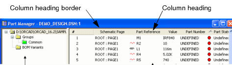
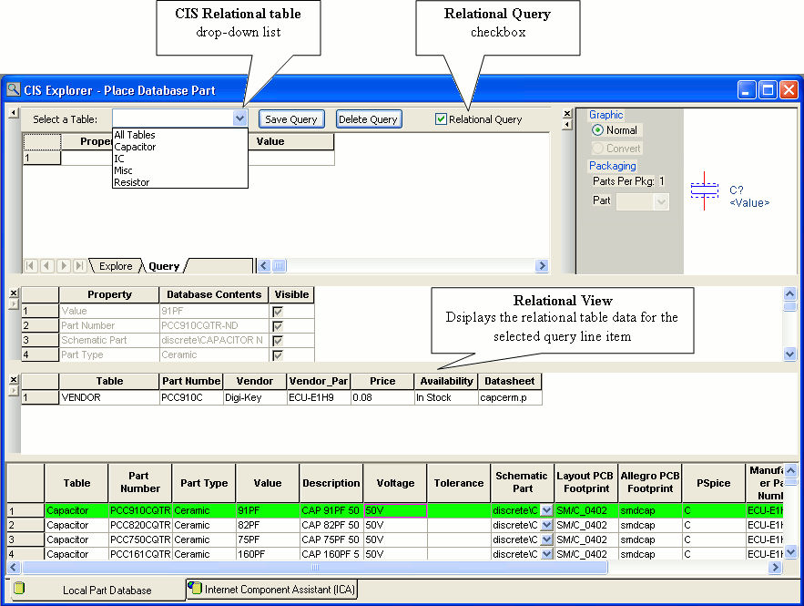
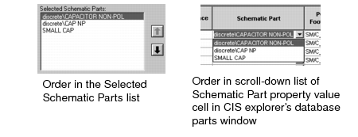
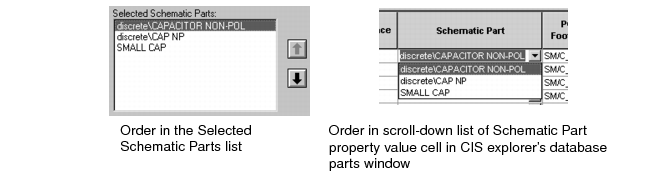
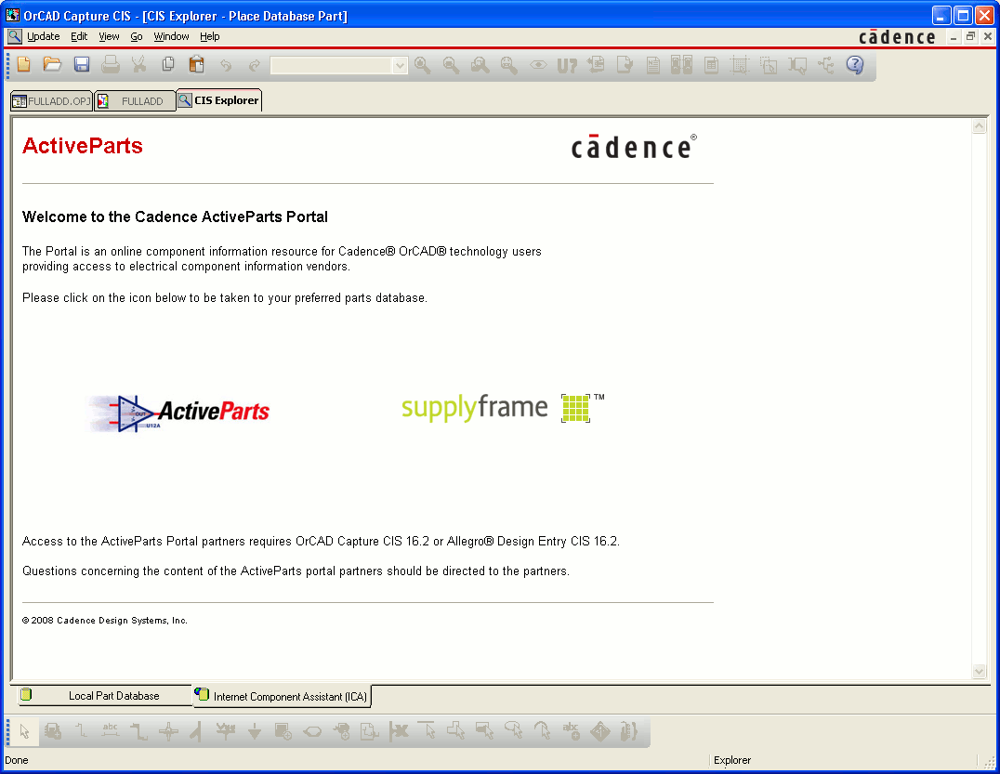
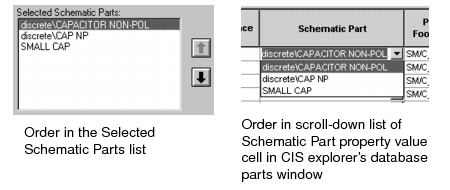
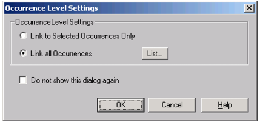

3
This chapter describes the various procedures you use when working with database parts, including the following:
The CIS user interface includes standard Windows interface functionality along with a few additional features to make your work environment easy to use. You can also customize the layout of CIS windows for each of your Capture projects. The main CIS interface is comprised of the part manager and CIS explorer windows. Additional CIS menu commands are interspersed throughout the menus in Capture.
For descriptions of the functions of the windows in the CIS interface, see "The CIS work environment" .
The part manager window is composed of a component property view in the right pane, and a tree view in the left pane. The tree view is used for creating groups and subgroups of components for bill of materials variants. If you are not working with design variants, you can close the tree view. For more information on using the tree view, see "Defining and Using Groups and Subgroups" .
You can adjust the work environment for the part manager in the following ways:
For information about how to use the part database management features of the part manager, see "Viewing and updating part status" .
To sort information in the part manager

.The column by which the data in the part manager is currently sorted is indicated by a triangle icon. If the triangle points upward, the data is sorted in ascending order. If it points downward, the data is sorted in descending order.
CIS displays the CIS explorer when you choose Place Database Part or Link Database Part from a schematic page in Capture's schematic page editor. Information about how to use the database part features of the CIS explorer is covered in the following sections of this chapter.

The CIS explorer contains two tabbed windows--the Local Part Database and the Internet Component Assistant (ICA). You can navigate between these windows by clicking either one of the tabs at the bottom of the CIS explorer. Each window consists of a set of docking windows that can be redisplayed as floating windows or hidden. The Local Part Database window also contains a non-docking part selection window that cannot be redisplayed as floating or hidden (the database parts window).
Docking windows can be positioned and sized independently like standard windows. But, they allow you added control over your workspace in relation to the other windows inside the CIS explorer. Docking windows have these unique features:
Depending on the function of the window, you can also choose to show or hide some docking windows. CIS retains the size, position, and state of the windows between Capture sessions.
|
1.
|
Click the arrow above the window's double bar to expand or contract the window in the direction of the arrow. The bordering window automatically expands or contracts to fit the new window size. Since the expand/contract feature only functions horizontally, the arrow is dimmed if the window is not bordered by another window on the left or right. |
You can use the spreadsheet format of the database parts window to do the following:
Once you set up the columns, CIS saves the new settings for your next session.
[CIS Spreadsheet]
Font = {required Japanese font}
Size = {size of the font}
Note: The database parts window is part of the main CIS explorer window--you cannot hide or dock it. This is so that the window will be present at all times to place and link database parts.
Note: Roll the mouse wheel up and down to scroll through vertically in the database parts window.
Note: Hold down the SHIFT key and roll the mouse wheel up and down to scroll through horizontally.
Note: Click the mouse wheel button and drag it to the right or left in the database parts window to scroll horizontally.
Note: Click the mouse wheel button and drag it up or down in the database parts window to scroll vertically.
Note: For a description of the database parts window, see "Using the database parts window" .
The column by which the data is currently sorted is indicated by a triangle icon. If the triangle points upward, the data is sorted in ascending order. If it points downward, the data is sorted in descending order.
CIS keeps a separate column display configuration for each part type folder. So, when you hide or unhide a column, CIS only hides or unhides the column for the part type folder whose parts are currently displayed in the database parts window.
This section describes how to do the following:
When you place a database part, CIS includes all database part properties to be transferred.
Note: The Place Database Part command will not work unless you have entered the schematic part name in your database and have set the Schematic_Part property type in the configuration.
For information about locating and placing parts from the internet component assistant (ICA), see "Using the ICA to locate and create a new database part" .
You can use the explorer to locate a particular part in your database.
Note: CIS uses the part type property contents from your part database to determine the folder hierarchy.
Note: While placing a database part, if you get the error message "Could not read part information", then make sure that you check the CIS configuration settings and the .INI file.
You can also use the query feature in the CIS explorer window to locate all parts in the database that fit a set of criteria. This is useful when you want to view all the available parts that match a set of attributes. To use the query feature, you must first create the query criteria, then execute the database search. Additionally, you can:
Capture CIS allows you to create non-relational queries on a flat structure database.
Repeat steps Step 3 through Step 5 as necessary to construct subsequent rows of search criteria. You can delete a query row by selecting the row and then pressing Delete. Since a database search identifies only those parts that meet all the search criteria, you can use additional rows of criteria to pinpoint specific parts.
Note: If you make changes to column width or hide a column in Query view (Query tab), the same settings will not be retained when you change to the Explore view (Explore tab) and vice-versa.
Note: You can save your query definitions. See "Saving and retrieving a non-relational query" for more information.
OrCAD Capture CIS enables you to save your queries and retrieve them in subsequent Capture CIS sessions.
Note: Capture CIS saves the query name along with the query definitions in a file called CISQuery.txt file. This file is created only when you save your first query. The file by default is saved in your local Windows installation directory, for example, WINNT (Windows 2000) and WINDOWS (Windows XP).
In the Query tab of the Explorer window, select the query you want to retrieve from the Select a Query combo box. The query definitions for the selected query appear under the respective column headers in the Explorer window.
Note: You can also retrieve the query definitions of a saved query by entering the query name in the Select a Query combo box and pressing Enter.
You can change the existing query definitions in a saved query and use it later.
In the Query tab of the Explorer window, select the query you want to modify from the Select a Query combo box. The query definitions appear under the respective column headers in the Explorer window.
You can delete an existing saved query.
Capture CIS also allows you to create non-relational queries on a flat structure database. However, the relational view will be enabled in CIS explorer only if at least one relation is defined in CIS configuration.
Note: The drop-down list will show only the tables for which relational query has been defined.
Note: When you select particular table for running a query, all the properties of that table are available in the property tab to formulate a query. If you select "All Tables" the union of the properties of all the relational tables is available for forming the query.
|
7.
|
6. In the Value column, enter a value. If you're using the equal to (=) logical operator, you can use wildcard characters for the value: an asterisk (*) matches a group of characters, and a question mark (?) matches any single character. |
Repeat steps Step 3 through Step 5 as necessary to construct subsequent rows of search criteria. You can delete a query row by selecting the row and then pressing Delete. Since a database search identifies only those parts that meet all the search criteria, you can use additional rows of criteria to pinpoint specific parts.
After locating the database part from the local part database, you can place it on your schematic page. If you want to place a part from the ICA, see "Using the ICA to locate and create a new database part" .
Note: If your database contains mechanical (non-electrical) parts, you can place them on your design. However, if you want the mechanical parts to be included in a CIS bill of materials, you must place them on the root schematic or on a schematic that is referenced by a hierarchical block on the root schematic. For information about root schematics and hierarchical blocks, see the Capture User's Guide or Capture online help.
Note: You can define property place holder positions in the schematic library for properties which you want pre-positioned. For example, you can define a Tolerance property in the resistor schematic part and position it so that when the part is placed, the property position is satisfactory. See the OrCAD Capture User's Guide for more information.
Any properties specified during configuration as transferable are copied to the placed part and are present in the placed part properties.
CIS sets the appropriate property visibility. If the property is set to Visible and exists in the library, CIS uses the property position defined in the library; otherwise, CIS displays the property in a default position. If you change the position of a property in the part editor, any subsequent updates to the part (using the Link Database Part command) retain the new position.
You can also use the library convert feature to hold two different orientations of the part, one for the normal orientation and one for the 90-degree rotation. See the Capture User's Guide for more information.
Before placing database components, you should make sure that path for all the libraries including custom libraries, is initialized. There are three ways to initialize a library path:
For more information about placing and linking database parts, see "Placing a database part on a schematic page" and "Linking a placed part to a database part" .
Database parts may include browsable properties. These properties actually specify links to documents or web sites. CIS allows you to browse properties for which the Browsable option was set during configuration.
For information about configuring CIS, see "Creating a configuration file" .
Since the browsing feature is generic, you can view virtually any kind of data. You can include references to your component datasheets on your company's intranet, as Word files, Acrobat files, or any other format. For example, you may want to view package drawings, mechanical models, simulation models, and so on.
CIS launches the appropriate browser based on the value of the part property.
Example: If the part property value is a URL such as:
http://www.chipmfgr.com/datasheets/74ALS138.html
CIS starts your default web browser and displays the web page for that URL.
Almost every design will use some new parts that aren't in your part database and do not have a company part number. CIS lets you create a new part while you're working and save it to the database. This allows you to continue working without having to stop for the part approval process. When you save a temporary part to your database, CIS can automatically assign a temporary part number and track the part for you in the part manager. Later, if the part is approved and assigned a company part number, CIS can automatically update your design with the new part information. For more information about updating part information on designs, see "Viewing and updating part status" .
You can create new database parts using one of the following methods:
Note: You must have write permission for the part and footprint libraries to save a part with the internet component assistant (ICA).
You can create new database parts using parts that are already stored in your database. Once you have selected and altered an existing database part, you can store it as a temporary part in your database and place instances of the new part on schematic pages.
|
6.
|
Enter the appropriate values for the new part's database properties in the Contents column. You cannot change the selected table in the Save Part To area. This is because you are deriving the new part from a placed part that is already in your part database, so the new part is automatically placed in the same table as the existing database part. |
Note: If you have selected Assign Temporary Part Numbers Automatically in the configuration, a temporary part number is already assigned which you cannot modify.
|
|
|
If you know what library your footprints or schematic parts are stored in, highlight only that library in the Configured Libraries list. This will greatly reduce the number of schematic parts you have to scroll through to find part or footprint names.
|
|
|
|
|
Only select a schematic part from your own custom libraries; do not select a part from the libraries that are supplied with Capture (resource libraries). Resource libraries are often changed by upgrades to new versions of Capture. If the name or path of the schematic part you select is changed during an upgrade, it will become invalid for all your database parts.
|
|
|
|
|
If you are deriving a new mechanical (non-electrical) part and choosing an alternate schematic part, you must choose a schematic part with no pins. If mechanical parts with pins are placed in a design, they will invalidate netlists generated from that design.
|
|
|
|
e.
|
Repeat steps Step c and Step d until you have selected all the schematic parts or footprints that you want to be available for use with the database part. |
|
|
f.
|
If you selected more than one schematic part or footprint, use the up and down arrows to arrange the order of the parts or footprints. The top one will be the default value for the database part. The order of the whole set determines the order in which they will display in the scroll-down list of the Schematic Part or PCB Footprint property value cells of the CIS explorer's database parts window. |
Note: After the new part is added to the database, you must have administrative privileges for the database to modify the properties that you set above.
You can create new database parts using parts that you have already placed on schematic pages. While you are deriving a new database part, you can change the values and visibility settings of the database part properties.
By default, CIS does not automatically copy all placed part properties to the part database. The properties that are automatically transferred have all three of the following characteristics:
If you want other property values to be added to the database, you can manually add them during this procedure, but only if the property is mapped in the database configuration.
As soon as the new part is stored in the database, you can place instances of the part on schematic pages. The part will remain a temporary part, however, until your database administrator assigns a permanent part number.
Note: If you are deriving the new part from a placed part that is already in your part database, the new part is automatically placed in the same table as the existing database part. CIS will not allow you to select a different table.
Note: If you have selected the Assign Temporary Part Numbers Automatically option in the configuration, a temporary part number is already assigned which you cannot modify.
|
|
|
Only select a schematic part from your own custom libraries; do not select a part from the libraries that are supplied with Capture (resource libraries). Resource libraries are often changed by upgrades to new versions of Capture. If the name or path of the schematic part you select is changed during an upgrade, it will become invalid for all your database parts.
|
|
|
e.
|
Repeat steps Step c and Step d until you have selected all the schematic parts or footprints that you want to be available for use with the database part. |
|
|
f.
|
If you selected more than one schematic part or footprint, use the up and down arrows to arrange the order of the parts or footprints. The top one will be the default value for the database part. The order of the whole set determines the order in which they will display in the scroll-down list of the Schematic Part or PCB Footprint property value cells of the CIS explorer's database parts window. |
You use the ICA to access the ActiveParts or supplyframe portal part database and locate and create parts that are not yet stored in your local part database.
When you need to locate and create parts during a design session, do the following:
Through the ICA, you can locate new parts using the part database at the Activeparts or supplyframe portals.
Note: These databases are updated as new part information becomes available without requiring you to update your CIS software installation.
This page displays the two ICA portals (ActiveParts & supplyframe) that are available.
Note: The first time you access the activeparts web site, you will have to create a login.
Note: For information about using the search features, refer to the respective online help of these two portals.
When you have found the part you want to create, you can add the part to your database and place instances of the new database part on a schematic page.
The number of steps (1 to 3) in the wizard and the options available (see the table below) in Step 1 of the wizard will vary depending on the following:
If you accept the CIS default library name and the library has not already been created, Capture will prompt you to allow it to create the library and add the new part to that library. However, before you can place the part from your local part database, you must add the new library to your Capture configuration by doing the following:
|
|
|
Only save schematic parts to your own custom libraries; do not save parts to the libraries that are supplied with Capture (resource libraries). Resource libraries are often changed by upgrades to new versions of Capture. If the library in which you save the schematic part is replaced during an upgrade, you will lose the schematic part information associated with the new database part.
|
When you finish the New Database Part wizard, CIS displays the New Database Part dialog box.
Note: If you have selected Assign Temporary Part Numbers Automatically in the configuration, a temporary part number is already assigned which you cannot modify.
|
|
|
Only select a schematic part from your own custom libraries; do not select a part from the libraries that are supplied with Capture (resource libraries). Resource libraries are often changed by upgrades to new versions of Capture. If the name or path of the schematic part you select is changed during an upgrade, it will become invalid for all your database parts.
|
|
|
e.
|
Repeat steps Step c and Step d until you have selected all the schematic parts or footprints that you want to be available for use with the database part. |
|
|
f.
|
If you selected more than one schematic part or footprint, use the up and down arrows to arrange the order of the parts or footprints. The top one will be the default value for the database part. The order of the whole set determines the order in which they will display in the scroll-down list of the Schematic Part or PCB Footprint property value cells of the CIS explorer's database parts window (see figure below). |
Note: Make sure that you have a schematic part selected before continuing. If you do not, CIS will return an error when you attempt to place the part and you will have to repeat this procedure to begin placing the part.
Note: If you chose to add the new part to the database in step Step 3, a new record is added for the part at this point. Once this new part is added to the database, you must have administrative privileges for the database to modify the properties that you set above.
You can use the Link Database Part command from the part manager or the schematic page editor to assign a database part (and the associated transferable properties) to one or more placed parts. You can also specify whether you want to:
OrCAD Capture CIS allows you to link selected part occurrence(s) or a part with multiple occurrences to a database part. See "Linking part occurrence(s) to a database part" for details.
You can link external parts using the Link Database Part command only from the Parts Manager. For external parts with a single occurrence, you can choose the Link Instance pop-up option from the Parts Manager to update the instance in the external part or library as well as the occurrence.
You can set preferences for linking a placed part to a database part by using the Extended Linking command.
Note: The Extended CIS Linking command is also accessible from the project manager and the schematic page editor.
Note: The default behavior of OrCAD Capture CIS is to replace the symbol, reference designator, and all the properties of the selected placed part with that of the database part.
Note: The link preferences can be changed any number of times during a Capture CIS session using the Extended CIS Linking command.
|
|
|
Do not select the Preserve Reference Designator check box, if you are linking a placed part to a database part that differ in the number of components. Otherwise, the reference designators for the placed part will not be preserved after the linking is done.
|
or
Click the Link Database Part  toolbar button.
toolbar button.
Double-click the database part you want.
or
Select the database part you want and, from the Update menu, choose Link Database Part.
If the schematic part property for the placed part is different from that of the selected database part, CIS will highlight the database part's row yellow when you select it in the database parts window.
Note: In the visibility window, CIS displays the values of the selected database part's properties in the Database Contents column and the values of the placed part's properties in the Schematic Contents column. If the value of placed part's property is green, then it matches the value of the property for the database part. If the value of placed part's property is red, then the value does not match that of the database part.
Note: CIS displays a warning message, if you select a database part to link to a group of placed parts whose part reference prefixes or values differ. CIS will, however, allow you to link a placed part to a database part with a different schematic part name.
CIS links the database part to the placed part, and the appropriate properties are transferred.
Note: If you have defined part reference prefixes in the Allowed Part Reference Prefix text box and you link a placed part in your design to a database part with the Preserve Reference Designator check box checked in the CIS Extended Linking dialog box, the reference designator of the placed part is retained and all the transferable properties of the database part are transferred to the placed part. Now, when you update the part status from the part manager (using Update All Part Status command), the part status column displays: Approved: Part not found. This is because CIS is unable to find the part (with matching part reference prefix and properties) in the database table. You may avoid this situation by changing the reference designator of the placed part to the one you defined in the Allowed Part Reference Prefix text box or delete the part reference prefix from the Allowed Part Reference Prefix text box.
Note: CIS, by default, checks only for the symbol name while linking a placed part to a database part. If you want CIS to check for the symbol name, the complete path of the library, and the date/time stamp of the symbol during the linking process, add the following entry under [Symbol Libraries] section in CAPTURE.INI file:
[Symbol Libraries]
Strict Cache Check=1
Note: While linking, if a database part is a package alias of placed part, then the schematic part property of the database part will not transferred to the placed part on schematic. This is because the tool does not differentiate between a package and its alias.
Keyed properties are defined in the database configuration. Generally, though, the Value property is the primary keyed property. The initial query searches for parts with a value matching that of the placed part. If you select several parts, CIS uses the keyed properties and part reference prefix of the first part in the group (from top left to bottom right) for the initial query
CIS also uses the configuration settings for Allowed Part Reference Prefixes and Part Reference Associations to filter the database for only those parts that apply to the reference prefix of the selected parts.
Double-click the database part you want.
or
Select the database part you want and, from the Update menu, choose Link Database Part.
If the schematic part property for the placed part is different from that of the selected database part, CIS will highlight the database part's row yellow when you select it in the database parts window.
Note: In the visibility window, CIS displays the values of the selected database part's properties in the Database Contents column and the values of the placed part's properties in the Schematic Contents column. If the value of placed part's property is green, then it matches the value of the property for the database part. If the value of placed part's property is red, then the value does not match that of the database part.
The database part is linked to the placed parts, which also receive the transferable properties, including the part value. If any of the selected placed parts are multiple-part packages and have defined part references, CIS updates all other parts in the package at the same time. For example, if the selected placed part is U33B, CIS will update U33A, U33C, and any other parts in the package as well. If the selected placed part reference is undefined, only the selected part is updated.
Note: CIS, by default, checks only for the symbol name while linking a placed part to a database part. If you want CIS to check for the symbol name, the complete path of the library, and the date/time stamp of the symbol during the linking process, add the following entry under [Symbol Libraries] section in CAPTURE.INI file:
[Symbol Libraries]
Strict Cache Check=1
Note: While linking, if a database part is a package alias of placed part, then the schematic part property of the database part will not transferred to the placed part on schematic. This is because the tool does not differentiate between a package and its alias.
You can select whether you want to link all the occurrences of a selected part (s) or only the selected occurrence (s) of a part to a database part.

Note: The Occurrence Level Settings dialog box is not displayed in the following situations, where the selected part(s) has only a single occurrence in design or the Do not show this dialog again check box is selected.
or
Select Link all Occurrences check box to link the database part to all the occurrences of the selected part (s) on a schematic page.
Note: CIS does not allow you to link a database part to part(s) in a group, which have multiple occurrences .
.
If you select the Do not show this dialog again check box, the Occurrence Level Settings dialog box will not be displayed the next time you link a part (s), which has multiple occurrences in a design. To display this dialog box again, you must change the following entry under the [Link Settings] section in the CAPTURE.INI file:
[Link Settings]
Show Occurrence Link Dialog=FALSE
to
Note: Show Occurrence Link Dialog=TRUECIS, by default, checks only for the symbol name while linking a placed part to a database part. If you want CIS to check for the symbol name, the complete path of the library, and the date/time stamp of the symbol during the linking process, add the following entry under [Symbol Libraries] section in CAPTURE.INI file:
[Symbol Libraries]
Strict Cache Check=1
Note: While linking, if a database part is a package alias of placed part, then the schematic part property of the database part will not transferred to the placed part on schematic. This is because the tool does not differentiate between a package and its alias.
You can view a placed part's local and Internet database properties right from the schematic page or the part manager, if the part has been added to the local part database. When you choose to view the part properties, CIS displays a read-only version of the CIS explorer with a comparison of the placed part's properties to those of its linked database part. You can also use this part viewing capability to check the latest data sheet, stocking, and pricing information from the Internet.
Note: On the schematic page, the selected part must be in your local part database for CIS to display part properties. If you attempt to view the database properties of a part not stored in your local part database, CIS will display the Local Part Database tab of the CIS explorer window with no part information. If you then click the Internet Component Assistant (ICA) tab, CIS will display an error message page.
Note: The View Database Part mode is a read-only mode. For this reason, you cannot use the search or query functions of the explorer window to search for, place, or link a database part.
CIS displays the database part property contents in the database parts window. In the visibility window, CIS displays both the contents of the database parts properties and of the properties that have been transferred to the schematic. If the content of a schematic property is green, then it matches the content of the part database. If the content of a schematic property is red, then the contents do not match the part database.
|
3.
|
If you want to check the latest data sheet, stocking, or pricing information from the Internet, click the Internet Component Assistant (ICA) tab at the bottom of the CIS explorer. The Internet part property information is displayed for the part, including hyperlinked data sheet URLs for parts that have data sheets associated with them. |
You can also use the part manager to copy properties from one part to another (or to several others) in the design. CIS copies only those properties defined in the database configuration file as transferable.
|
3.
|
Select the part with the properties to be copied. You can use the Split command (from the part manager's Window menu) to display two areas of the part manager. This can make copying properties from one part to another much easier (by dragging the part across split panes) if the two parts are widely separated in the part manager. |
To copy properties from one part to a group of parts
In Allegro PCB Editor, you cannot view the assembly drawings for the variants of a design created in Capture CIS. The information about the variants, the part changes for the variants of the design, can be exported to the variants.lst file. Allegro PCB Editor can use this file to import information about the variants. As a result, the variants.lst file serves as a mechanism for passing variant information to Allegro PCB Editor.
Once you are done with creating variants for a design, you can create the variants.lst file in CIS. You can create this file using the Export Variants List dialog box. The variants.lst file can then be imported in the board in PCB Editor.
To create the variants.lst file, CIS needs two inputs:
The mappings between CIS property names and Allegro PCB Editor injected property names are specified in the variant.cfg file. A sample variant.cfg file is located in the same folder as the Capture.exe file. The variant.cfg file contains entries of the following types:
_ <CIS property name> = YES
This means that <CIS property name> has significance in Allegro PCB Editor. It needs to be written into the variants.lst file. A space in the property name is replaced by an underscore. For example, Part Number = YES is written as Part_Number in the variants.lst file.
_ <CIS property name> = NO
This means that <CIS property name> does not have any significance in Allegro PCB Editor. It does not have to be written into the variants.lst file.
_ <CIS property name> = <PCB Editor Property Name>
This means that the equivalent of <CIS property name> in Allegro PCB Editor is < PCB Editor Property Name>. So, the entry in the variants.lst file is made as <PCB Editor Property Name>. For example, PCB Footprint = JEDEC_TYPE is written as JEDEC_TYPE in the variants.lst file.
|
1.
|
From the Tools menu, choose Export Variant List. The Export Variants List dialog box appears. |
|
2.
|
The Output File (Variants.lst) Path field specifies the default location for the Variants.lst file. |
The default location is the Allegro folder in the design directory. You can change this path.
|
3.
|
The Config File (Variant.cfg) Path field specifies the default path for the Variant.cfg file. |
The default path is the same as that of the Capture.exe file. You can change this path also.
CIS creates a Variants.lst file containing information about all the variants of the design.
The properties listed are the ones specified in the Variant.cfg file.